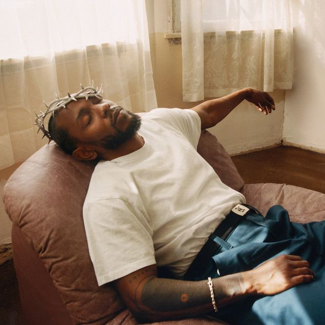
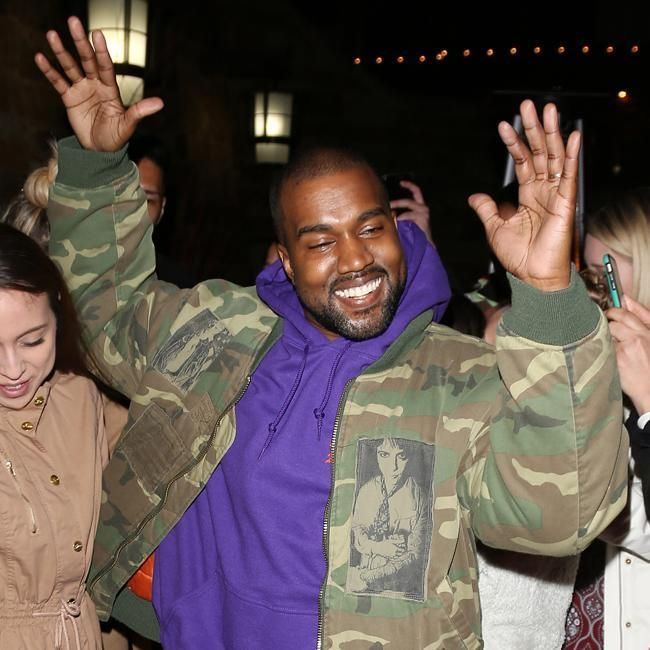

Nascido em Compton, Kendrick transforma rap em literatura. Ele ganhou até um Prêmio Pulitzer, o que deixa qualquer trabalho de português meu parecendo rascunho.
Para começar a ouvir: good kid, m.A.A.d city, To Pimp a Butterfly e DAMN.
Três nomes, zero imparcialidade e nenhuma intenção de aceitar reclamação.

Nascido em Compton, Kendrick transforma rap em literatura. Ele ganhou até um Prêmio Pulitzer, o que deixa qualquer trabalho de português meu parecendo rascunho.
Para começar a ouvir: good kid, m.A.A.d city, To Pimp a Butterfly e DAMN.

Começou como produtor, virou astro e mudou o som do hip hop várias vezes. Tem opinião sobre tudo, mas os álbuns falam por ele, e falam alto.
Para começar a ouvir: The College Dropout, Graduation e My Beautiful Dark Twisted Fantasy.
Rapper, produtor, estilista e figurinista de si mesmo. Cada álbum dele vem com um personagem, uma cor e um visual novos, e ele ainda ganha prêmio no final.
Para começar a ouvir: Flower Boy, IGOR e Call Me If You Get Lost.
Preencha o formulário e conte o seu top 3. Prometo ler com a mente aberta (mentira).